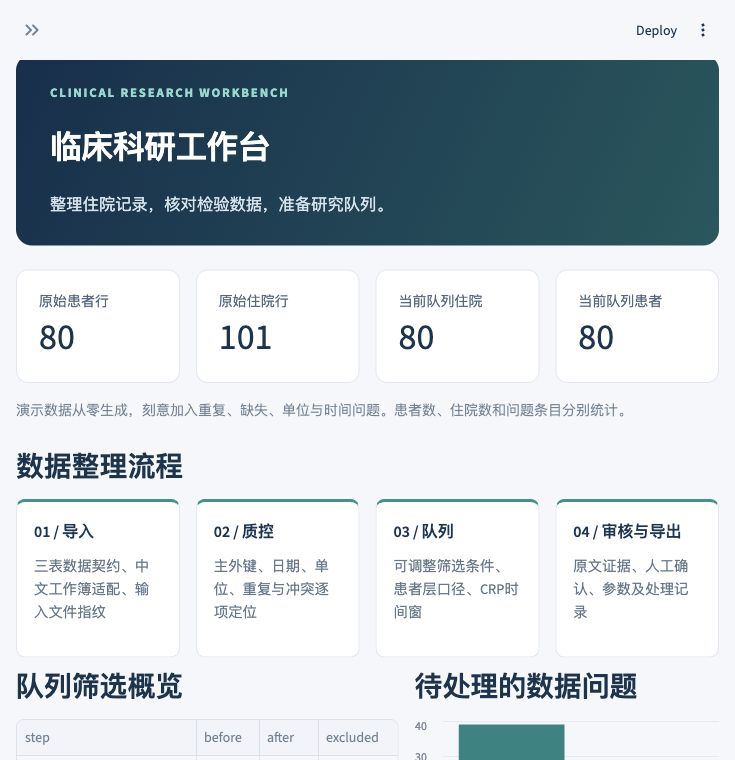

CLINICAL RESEARCH WORKBENCH
临床科研工作台
整理住院资料，核对检验数据，筛选研究队列。把来源、规则与需要人工确认的问题一起留下。
此页为项目展示。完整工具在本地运行；公开样例全部从零合成。
80
合成患者
101 / 403
合成住院行 / 检验行，含刻意注入的问题
34
合成数据与界面流程测试

WORKFLOW
从已有表格继续整理
面向脊柱外科回顾性研究资料，接收标准三表CSV、Excel或已有中文采集整理工作簿。患者、住院和检验分层处理。
- 导入与标准化：受控日期解析、单位换算、来源指纹。
- 质量检查：主外键、重复、缺失、时间顺序和冲突测量。
- 队列与描述：年龄、诊断、手术、日期过滤；明确检验时间窗和统计粒度。
- 审计导出：队列、质量问题、筛选流程与参数一起导出。
TEXT REVIEW
候选字段先核对原文
保留语义状态
未知、未查和阴性分开；计划操作和已完成操作分开。
证据可以定位
候选携带逐字证据与原文位置，原文变化后旧候选失效。
逐字段确认
审核通过与驳回分别留痕，只导出已通过字段及审核历史。
预置候选演示不调用模型；可选本机Ollama接口已完成模拟服务测试，尚无真实模型准确率评测。
RUN LOCALLY
本地运行
需要Python 3.12。下载仓库后，建立虚拟环境并激活，再执行：
python -m pip install -r requirements.txt python -m streamlit run app.py
在浏览器打开 http://127.0.0.1:8501，首次启动会加载合成数据。